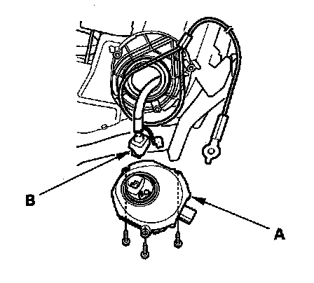

HID Unit Replacement
HID Unit Replacement1. Make sure you have the anti-theft code for the radio and the navigation system (if equipped). Make sure the ignition switch is OFF.
2. Turn the combination light switch OFF.
3. Disconnect the negative battery cable, then disconnect the positive cable.
4. Remove the headlight assembly.

5. Remove the three mounting screws and the HID unit (A).
6. Disconnect the 4P connector (B) from the HID unit.
7. Inspect the gasket for damage. If damaged, replace it.
8. Install in the reverse order of removal.
9. Enter the anti-theft codes for the radio and the navigation system, then set the clock.